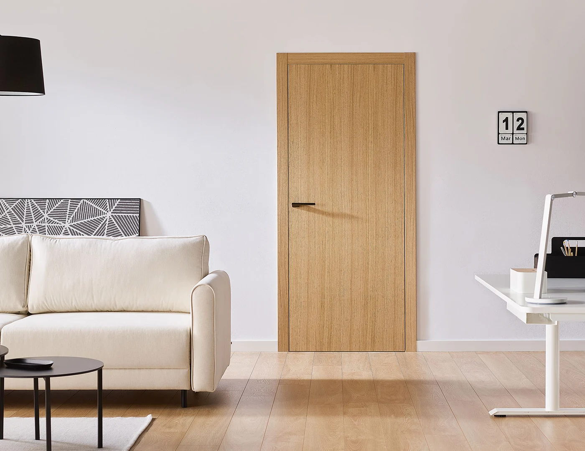
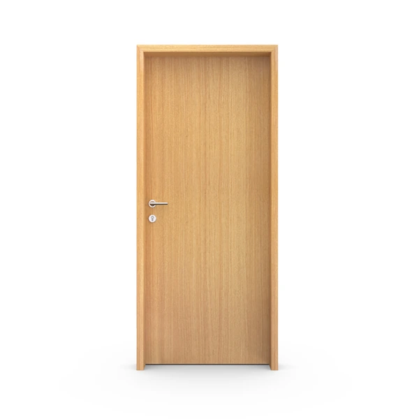
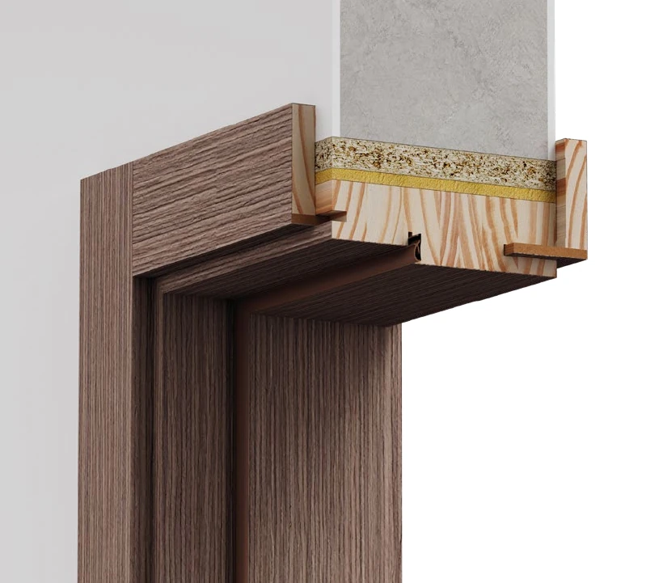

Puertas de interior / Línea Placa
Placa
foliada.
Tres terminaciones, una misma línea.
Superficies lisas con terminación foliada en nogal, roble o blanco. Explorá el tono que mejor acompañe los materiales de tu ambiente.
Encontrá tu combinaciónLa hoja. El ambiente. El encuentro con la pared.

La puerta como parte de la arquitectura.01 / Elegí el acabado
Un diseño.
Distintos caracteres.
El acabado cambia la presencia de la puerta. Explorá las opciones de la línea para tu ambiente.

El marco y la apertura del render son ilustrativos; se eligen por separado.
Las muestras orientan la elección. El tono y la terminación se definen con el equipo comercial.
Terminaciones de la línea
Foliados
Roble, nogal y blanco. Explorá las tres terminaciones de la línea y consultá la muestra para tu obra.
02 / Elegí el sistema
El detalle que
cambia el conjunto.
El marco define cómo se encuentra la hoja con la pared. Mirá su estructura y elegí el que te interesa.

Hoja Placa / Asesoramiento
Marco enrasado
Los detalles de este sistema se definen con el equipo comercial.
Incluirlo en mi consultaMarco y contramarco
Un perímetro visible sobre la pared. Los contramarcos pueden ser lisos o moldurados y tienen ajuste telescópico según el espesor del tabique.
La combinación de hoja, apertura y marco se confirma según las características de tu obra.
03 / Pensada para tu proyecto
La forma de abrir.
Las medidas. Los detalles.
La apertura se confirma junto con las medidas y el sistema de marco.
Lo que se ve.
Y lo que la construye.
Modelos y terminaciones
- Diseño
- Hoja de superficies lisas.
- Terminaciones
- Foliados en roble, nogal y blanco.
- Composición de la hoja
- A confirmar con el equipo comercial para esta línea.
Medidas y espesores
- Medidas y espesores
- Se definen según la apertura y el sistema de marco.
- Documentación de la hoja
- Solicitá la ficha vigente de Placa foliada al equipo comercial.
Las medidas y la composición de la hoja se confirman para tu proyecto. Los datos de Placa enchapada o pintada no se trasladan a la versión foliada.
Fichas para tu obra
- Solicitar documentación de Placa foliada↗
- Marco y contramarcoPDF ↗
- Buña filo interiorPDF ↗
- Buña filo exteriorPDF ↗
- Filo muroPDF ↗
Las fichas de marco son recursos generales. La combinación con esta hoja y apertura se confirma para tu proyecto.
Tu selección / Placa foliada
Llevemos esta idea
a tu proyecto.
Estas son las opciones que estás explorando. Un vendedor puede ayudarte a definir las medidas y la combinación para tu obra.
Seguir viendo puertas- Hoja
- Placa foliada
- Acabado
- Roble
- Sistema
- Marco y contramarco
- Apertura
- Simple
Revisá tu selección y continuá por WhatsApp.